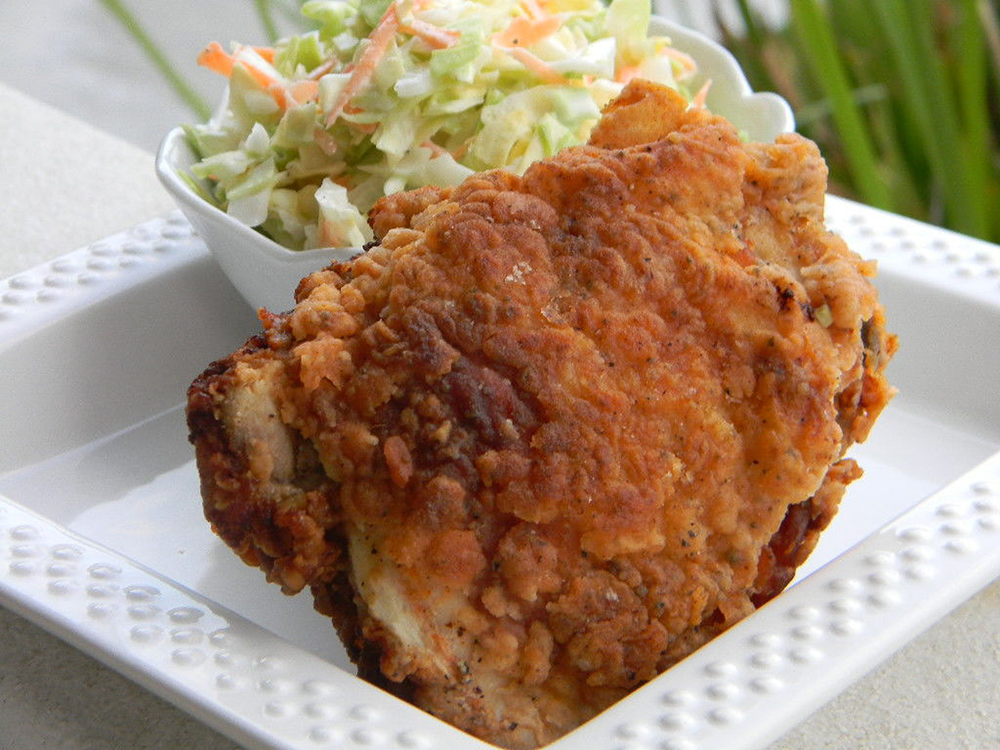

Fried chicken

Description
A wonderful recipe for deep-fried chicken with a Southern taste all its own. The hint of tangy buttermilk under a crispy coating of deliciousness makes this chicken stand out.
Ingredients
- 6 chicken thighs
- 6 chicken drumsticks
- 2 tablespoons salt
- 1 quart cold water, to cover
- 2 cups cold buttermilk
- 1 egg, beaten
- teaspoon chicken seasoning mix (see note)
- 3 cups all-purpose flour
Steps
- Place chicken thighs and drumsticks in a large bowl, cover with cold water, and mix in salt. Cover and refrigerate from 8 hours to overnight.
- Rinse chicken thoroughly. Mix buttermilk, beaten egg, and 1 teaspoon chicken seasoning in a large bowl until thoroughly combined.
- Place chicken pieces into buttermilk mixture and refrigerate 30 minutes to 1 hour.
- Heat vegetable oil in a deep-fryer or large saucepan to 375 degrees F (190 degrees C).
- Place flour and 2 tablespoons chicken seasoning into a shallow bowl and mix until combined. Remove chicken from buttermilk bath, shake off excess buttermilk, and press into flour. Tap off excess flour.
- Gently place chicken into hot oil, 3 or 4 pieces at a time; fry chicken until golden brown, 12 to 15 minutes per batch
- Remove chicken pieces to a cooling rack set over paper towels to remove excess oil before serving.
Bon appetit!